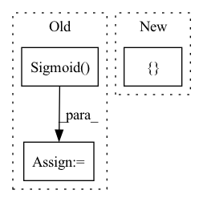

Pattern ID :779

Before Change
if mask_nonlinear == "relu":
self.mask_nonlinear = nn.ReLU()
elif mask_nonlinear == "sigmoid":
self.mask_nonlinear = nn.Sigmoid()
elif mask_nonlinear == "softmax":
self.mask_nonlinear = nn.Softmax(dim=1)
else:
raise ValueError("Cannot support {}".format(mask_nonlinear))
After Change
self.gtu = GTU1d(num_features, num_features, kernel_size=1, stride=1)
if mask_nonlinear in ["relu", "sigmoid"]:
kwargs = {}
elif mask_nonlinear == "softmax":
kwargs = {
"dim": 1
}
In pattern: SUPERPATTERN
Frequency: 3
Non-data size: 3
Instances
Fragment ID: 2564129
Project Name: tky823/dnn-based_source_separation
Commit Name: 87afd25f53e66db234ad9349e8fdedc0061d33b1
Time: 2021-11-13
Author: delta9guitar97@gmail.com
File Name: src/models/dptnet.py
Class Name: Separator
Method Name: __init__
Parent Class: nn.Module
Fragment ID: 2564125
Project Name: tky823/dnn-based_source_separation
Commit Name: 6333394de0e49d076fa5e5f6d06d7f145ec8bcec
Time: 2021-11-22
Author: delta9guitar97@gmail.com
File Name: src/models/danet.py
Class Name: DANet
Method Name: __init__
Parent Class: nn.Module
Fragment ID: 2564123
Project Name: kovanostra/message-passing-neural-network
Commit Name: 224aa203226b03e6df47c62d924fc2fa07949d05
Time: 2020-05-30
Author: kovanostra@gmail.com
File Name: message_passing_nn/model/graph_rnn_encoder.py
Class Name: GraphRNNEncoder
Method Name: __init__
Parent Class: nn.Module